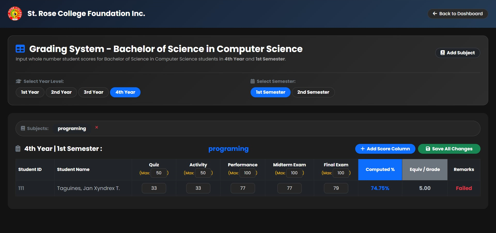
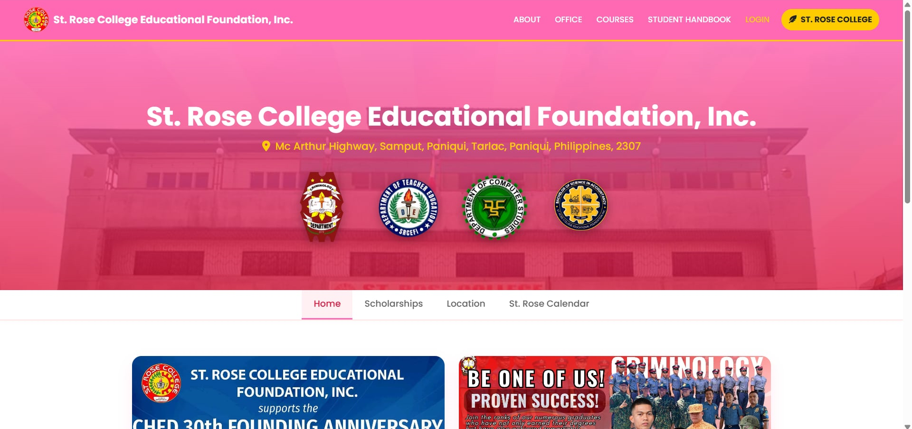
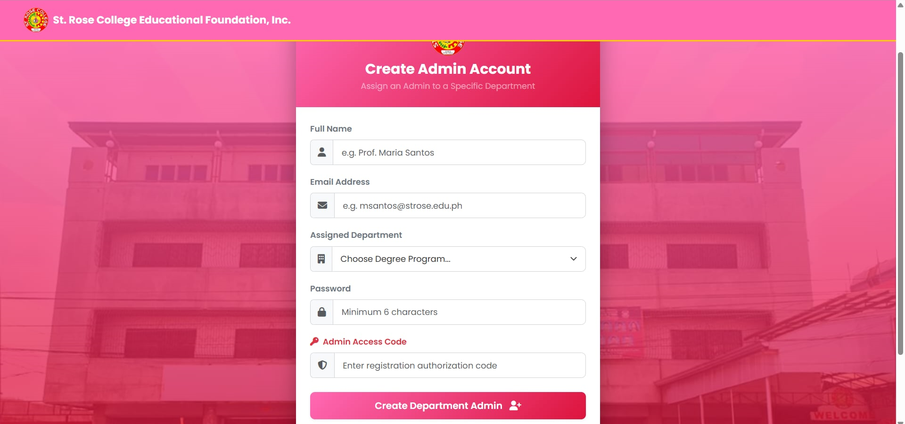
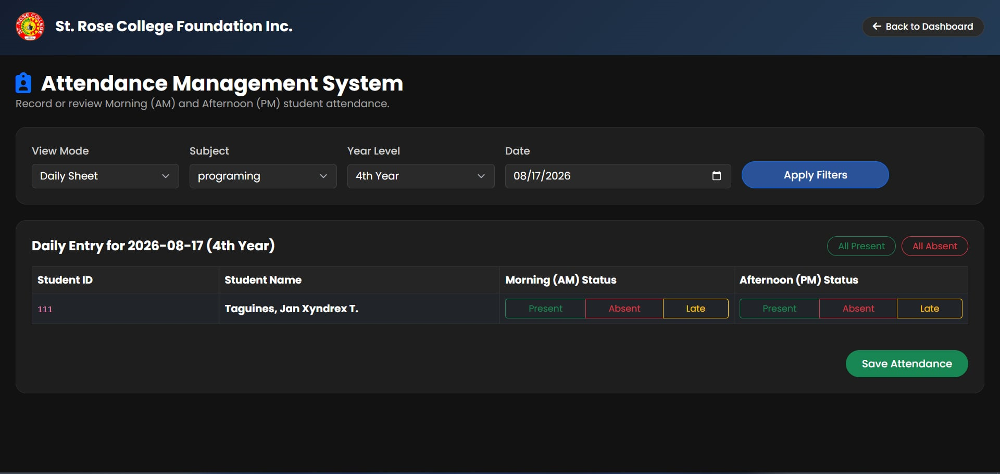
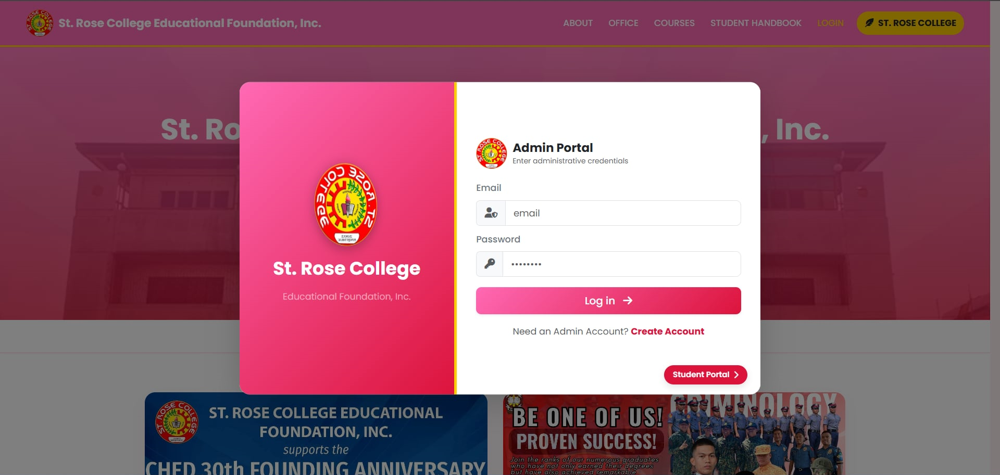
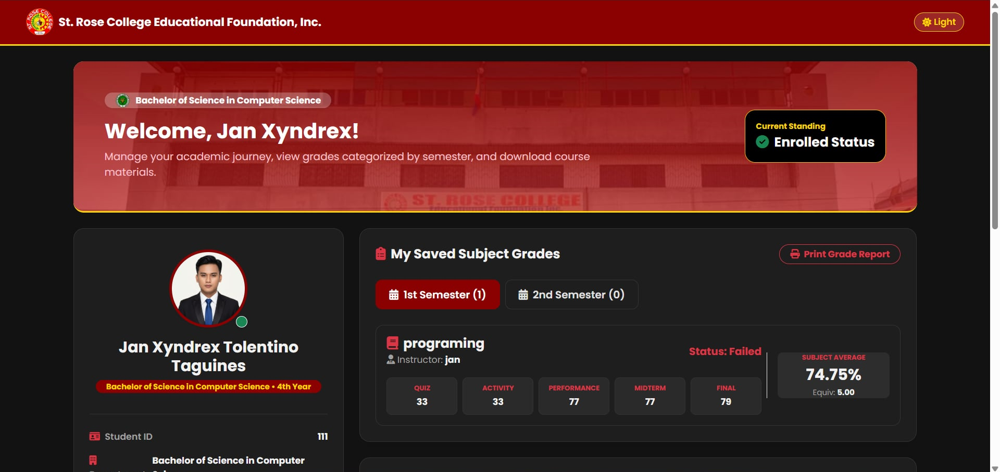
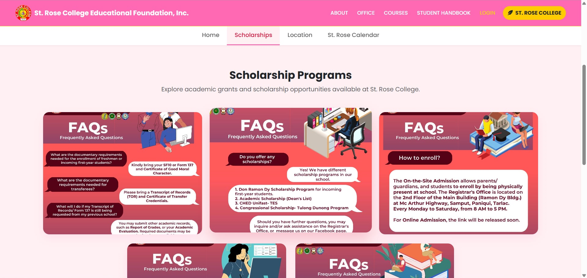
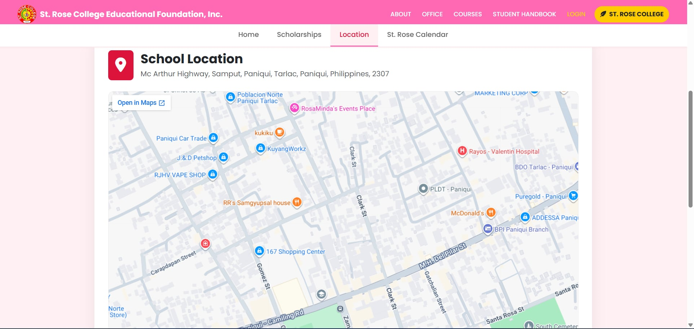
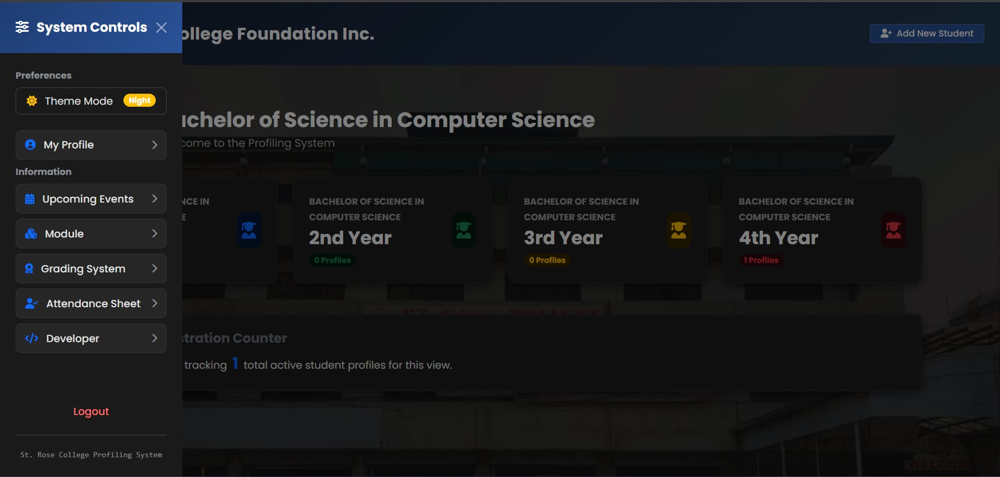
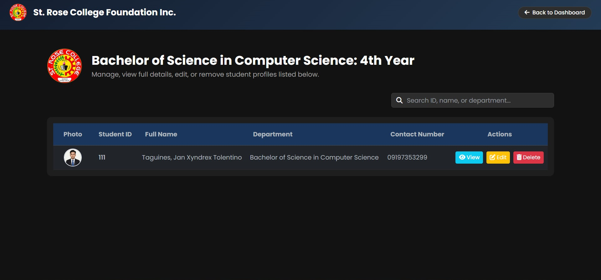

DCS Student Grading Management System
Helping instructors efficiently record, compute, and monitor student academic performance.
Passionate about building digital solutions through programming, web development, and creative technology.
I am Jan Xyndrex T. Taguines, a Computer Science student from St. Rose College Educational Foundation, Inc. with a strong interest in web development, software engineering, and technology-driven solutions.
Beyond academics, I serve as the Public Information Officer (P.I.O.) of Umangan Youth Council (UYC). I also enjoy Photography, Playing Guitar and Drums, Basketball, and Cooking.
In addition, I successfully earned the Computer Systems Servicing (CSS) NC II Certification during Senior High School. This certification enhanced my technical skills in computer hardware, software installation, troubleshooting, system maintenance, and basic networking, providing a strong foundation that complements my studies in Computer Science.
2008 – 2014
Plastado, Gerona, Tarlac
Computer Systems Servicing (CSS)
2014 – 2020
Poblacion 3, Gerona, Tarlac
Bachelor of Science in Computer Science
2023 – Present
Samput, Paniqui, Tarlac










Helping instructors efficiently record, compute, and monitor student academic performance.
An integrated digital platform that provides students and administrators with convenient access to academic information, announcements, records, and essential school services.
A user-friendly sales and inventory management system designed to simplify transactions, track products, monitor sales, and improve overall business operations.
A web-based attendance monitoring platform that enables teachers to manage attendance records while allowing students to track their attendance status and summaries.
A centralized platform designed to manage, organize, and maintain student and departmental profiling records efficiently.
A hardware-based laser detection system built using Arduino, sensors, and electronic components to detect interruptions in a laser beam and trigger a corresponding response.
Cyber Room Intern
Photo Editing & Digital Media
Public Information Officer
Technical & Systems Support
© 2026 Jan Xyndrex Taguines